In the previous section, we saw how to design systems in which data
objects can be represented in more than one way. The key idea is to
link the code that specifies the data operations to the several
representations by means of generic interface
functions. Now we will
see how to use this same idea not only to define operations that are
generic over different representations but also to define operations
that are generic over different kinds of arguments. We have already
seen several different packages of arithmetic operations: the primitive
arithmetic (
+,
-,
*,
/) built into our
language, the rational-number arithmetic (
add_rat,
sub_rat,
mul_rat,
div_rat) of
section
2.1.1, and the complex-number arithmetic that we
implemented in section
2.4.3. We will now use
data-directed techniques to construct a package of arithmetic
operations that incorporates all the arithmetic packages we have already
constructed.
Figure
2.23 shows the structure of the system we
shall build. Notice the
abstraction barriers. From the perspective
of someone using “numbers,” there is a single
function
add
that operates on whatever numbers are supplied. The function
add is part of
a generic interface that allows the separate ordinary-arithmetic,
rational-arithmetic, and complex-arithmetic packages to be accessed
uniformly by programs that use numbers. Any individual arithmetic
package (such as the complex package) may itself be accessed through
generic
functions
(such as
add_complex) that combine packages
designed for different representations (such as rectangular and
polar). Moreover, the structure of the system is additive, so
that one can design the individual arithmetic packages separately and
combine them to produce a generic arithmetic system.
|
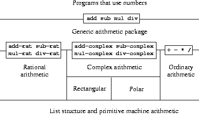
|
Figure 2.
23 Generic arithmetic system.
|
The task of designing generic arithmetic operations is analogous to
that of designing the generic complex-number operations. We would
like, for instance, to have a generic addition
function
add that
acts like ordinary primitive addition
+ on ordinary numbers,
like
add_rat on rational numbers, and like
add_complex on
complex numbers. We can implement
add, and the other generic
arithmetic operations, by following the same strategy we used in
section
2.4.3 to implement the generic selectors for
complex numbers. We will attach a type tag to each kind of
number and cause the generic
function
to dispatch to an appropriate
package according to the data type of its arguments.
The generic arithmetic
functions
are defined as follows:
function add(x,y) {
return apply_generic("add",list(x,y));
}
function sub(x,y) {
return apply_generic("sub",list(x,y));
}
function mul(x,y) {
return apply_generic("mul",list(x,y));
}
function div(x,y) {
return apply_generic("div",list(x,y));
}
We begin by installing a package for handling
ordinary numbers,
that is, the primitive numbers of our language. We will tag these
with the symbol
javascript_number. The arithmetic operations in this
package are the primitive arithmetic
functions
(so there is no need to
define extra
functions
to handle the untagged numbers). Since
these operations each take two arguments, they are installed in the
table keyed by the list
list("javascript_number","javascript_number"):
function install_javascript_number_package() {
function tag(x) {
return attach_tag("javascript_number",x);
}
function make_number(x) { return tag(x); }
function add(as) { return tag(head(as) + head(tail(as))); }
function sub(as) { return tag(head(as) - head(tail(as))); }
function mul(as) { return tag(head(as) * head(tail(as))); }
function div(as) { return tag(head(as) / head(tail(as))); }
put("make", "javascript_number", make_number);
put("add", list("javascript_number", "javascript_number"), add);
put("sub", list("javascript_number", "javascript_number"), sub);
put("mul", list("javascript_number", "javascript_number"), mul);
put("div", list("javascript_number", "javascript_number"), div);
}
Users of the JavaScript-number package
will create (tagged) ordinary numbers by means of the
function:
function make_javascript_number(n) {
return get("make","javascript_number")(n);
}
Now that the framework of the generic arithmetic system is in place,
we can readily include new kinds of numbers. Here is a package that
performs rational arithmetic. Notice that, as a benefit of
additivity, we can use without modification the rational-number code
from section
2.1.1 as the internal
functions
in the
package:
function install_rational_package() {
function make_rat(n, d) {
return pair(n, d);
}
function numer(x) {
return head(x);
}
function denom(x) {
return tail(x);
}
function add_rat(x, y) {
return make_rat(add(mul(numer(x), denom(y)),
mul(denom(x), numer(y))),
mul(denom(x), denom(y)));
}
function sub_rat(x, y) {
return make_rat(sub(mul(numer(x), denom(y)),
mul(denom(x), numer(y))),
mul(denom(x), denom(y)));
}
function mul_rat(x, y) {
return make_rat(mul(numer(x), numer(y)),
mul(denom(x), denom(y)));
}
function div_rat(x, y) {
return make_rat(mul(numer(x), denom(y)),
mul(denom(x), numer(y)));
}
function tag(x) {
return attach_tag("rational", x);
}
function make_rational(x, y) {
return tag(make_rat(x, y));
}
function add_rational(as) {
return tag(add_rat(head(as), head(tail(as))));
}
function sub_rational(as) {
return tag(sub_rat(head(as), head(tail(as))));
}
function mul_rational(as) {
return tag(mul_rat(head(as), head(tail(as))));
}
function div_rational(as) {
return tag(div_rat(head(as), head(tail(as))));
}
put("make", "rational", make_rational);
put("add", list("rational", "rational"), add_rational);
put("sub", list("rational", "rational"), sub_rational);
put("mul", list("rational", "rational"), mul_rational);
put("div", list("rational", "rational"), div_rational);
}
function make_rational(n, d) {
return (get("make", "rational"))(n, d);
}
We can install a similar package to handle complex numbers, using the
tag
"complex". In creating the package, we extract from the table
the operations
make_from_real_imag and
make_from_mag_ang
that were defined by the rectangular and polar packages.
Additivity
permits us to use, as the internal operations, the same
add_complex,
sub_complex,
mul_complex, and
div_complex
functions
from
section
2.4.1.
function install_complex_package() {
function make_from_real_imag(x, y) {
return get("make_from_real_imag", "rectangular")(x, y);
}
function make_from_mag_ang(r, a) {
return get("make_from_mag_ang", "polar")(r, a);
}
function add_com(x, y) {
return make_from_real_imag(add(real(x), real(y)),
add(imag(x), imag(y)));
}
function sub_com(x, y) {
return make_from_real_imag(sub(real(x), real(y)),
sub(imag(x), imag(y)));
}
function mul_com(x, y) {
return make_from_mag_ang(mul(mag(x), mag(y)),
add(ang(x), ang(y)));
}
function div_com(x, y) {
return make_from_mag_ang(div(mag(x), mag(y)),
sub(ang(x), ang(y)));
}
function tag(x) {
return attach_tag("complex", x);
}
function make_complex_from_real_imag(x, y) {
return tag(make_from_real_imag(x, y));
}
function make_complex_from_mag_ang(r, a) {
return tag(make_from_mag_ang(r, a));
}
function add_complex(as) { return tag(add_com(head(as),head(tail(as)))); }
function sub_complex(as) { return tag(sub_com(head(as),head(tail(as)))); }
function mul_complex(as) { return tag(mul_com(head(as),head(tail(as)))); }
function div_complex(as) { return tag(div_com(head(as),head(tail(as)))); }
put("make_from_real_imag", "complex", make_complex_from_real_imag);
put("make_from_mag_ang", "complex", make_complex_from_mag_ang);
put("add", list("complex", "complex"), add_complex);
put("sub", list("complex", "complex"), sub_complex);
put("mul", list("complex", "complex"), mul_complex);
put("div", list("complex", "complex"), div_complex);
}
Programs outside the complex-number package can construct complex
numbers either from real and imaginary parts or from magnitudes and
angles. Notice how the underlying
functions, originally defined in
the rectangular and polar packages, are exported to the complex
package, and exported from there to the outside world.
function make_complex_from_real_imag(x,y){
return get("make_from_real_imag","complex")(x,y);
}
function make_complex_from_mag_ang(r,a){
return get("make_from_mag_ang","complex")(r,a);
}
What we have here is a two-level tag system. A typical complex number,
such as
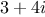 in rectangular form, would be
represented as shown in figure
2.24.
The outer tag (
"complex") is used to direct the number to the
complex package. Once within the complex package, the next tag (
"rectangular") is used to direct the number to the rectangular package.
In a large and complicated system there might be many levels, each
interfaced with the next by means of generic operations. As a data
object is passed “downward,” the outer tag that is used to direct
it to the appropriate package is stripped off (by applying
contents) and the next level of tag (if any) becomes visible to be used for
further dispatching.

|
Figure 2.
24 Representation of in rectangular form.
|
In the above packages, we used add_rat, add_complex, and
the other arithmetic
functions
exactly as originally written.
Once these definitions are internal to different installation
functions,
however, they no longer need names that are distinct from each other:
we could simply name them add, sub, mul, and div
in both packages.
Exercise 2.80.
Louis Reasoner tries to evaluate the
expression
magnitude(z) where
z is the object
shown in figure
2.24. To his
surprise, instead of the answer
he gets an error message from
apply_generic,
saying there is no method for the operation
magnitude
on the types
["complex",[]].
He shows this interaction to Alyssa P. Hacker, who says
“The problem is that the complex-number selectors were never
defined for
"complex" numbers, just for
"polar" and
"rectangular"
numbers. All you have to do to make this work is add the following
to the
complex package:”
put("real_part",list("complex"),real_part);
put("imag_part",list("complex"),imag_part);
put("magnitude",list("complex"),magnitude);
put("angle",list("complex"),angle);
Describe in detail why this works. As an example, trace through all
the
functions
called in evaluating the expression
magnitude(z)
where
z is the object shown in
figure
2.24. In particular, how many
times is
apply_generic invoked? What
function
is dispatched to
in each case?
Exercise 2.81.
The internal
functions
in the
javascript_number package are essentially
nothing more than calls to the primitive
functions
+,
-,
etc. It was not possible to use the primitives of the language
directly because our type-tag system requires that each data
object have a type attached to it. In fact, however, all JavaScript
implementations do have a type system, which they use internally.
Primitive predicates such as
is_string and
is_number
determine whether data objects have particular types. Modify the
definitions of
type_tag,
contents, and
attach_tag
from section
2.4.2 so that our generic system takes
advantage of JavaScript’s internal type system. That is to say, the system
should work as before except that ordinary numbers should be
represented simply as JavaScript numbers rather than as pairs whose
head is
the string
"javascript_number".
Exercise 2.82.
Define a generic equality predicate
is_equ that tests the equality
of two numbers, and install it in the generic arithmetic
package. This operation should work for ordinary numbers, rational numbers, and
complex numbers.
Exercise 2.83.
Define a generic
predicate
is_equal_to_zero that tests if its argument is zero,
and install it in the generic arithmetic package. This
operation should work for ordinary numbers, rational numbers, and
complex numbers.
We have seen how to define a unified arithmetic system that
encompasses ordinary numbers, complex numbers, rational numbers, and
any other type of number we might decide to invent, but we have
ignored an important issue. The operations we have defined so far
treat the different data types as being completely independent. Thus,
there are separate packages for adding, say, two ordinary numbers, or
two complex numbers. What we have not yet considered is the fact that
it is meaningful to define operations that cross the type boundaries,
such as the addition of a complex number to an ordinary number. We
have gone to great pains to introduce barriers between parts of our
programs so that they can be developed and understood separately. We
would like to introduce the cross-type operations in some carefully
controlled way, so that we can support them
without seriously violating our module boundaries.
One way to handle cross-type operations is to design a different
function
for each possible combination of types for which the
operation is valid. For example, we could extend the complex-number
package so that it provides a
function
for adding complex numbers to
ordinary numbers and installs this in the table using the tag
list("complex","javascript_number"):
1
function add_complex_to_javascript_num(z,x) {
return make_from_real_imag(add(real_part(z), x),
imag_part(z));
}
put("add",list("complex","javascript_number"),
function(z,x) { return tag(add_complex_to_javascript_num(z,x)); })
This technique works, but it is cumbersome. With such a system, the
cost of introducing a new type is not just the construction of the
package of
functions
for that type but also the construction and
installation of the
functions
that implement the cross-type
operations. This can easily be much more code than is needed to
define the operations on the type itself. The method also undermines
our ability to combine separate packages additively, or
least to limit the extent to which the implementors of the individual
packages need to take account of other packages. For instance, in the
example above, it seems reasonable that handling mixed operations on
complex numbers and ordinary numbers should be the responsibility of
the complex-number package. Combining rational numbers and complex
numbers, however, might be done by the complex package, by the
rational package, or by some third package that uses operations
extracted from these two packages. Formulating coherent policies on the
division of responsibility among packages can be an overwhelming task
in designing systems with many packages and many cross-type
operations.
Coercion
In the general situation of completely unrelated operations acting on
completely unrelated types, implementing explicit cross-type
operations, cumbersome though it may be, is the best that one can hope
for. Fortunately, we can usually do better by taking advantage of
additional structure that may be latent in our type system. Often the
different data types are not completely independent, and there may be
ways by which objects of one type may be viewed as being of another
type. This process is called coercion. For example, if we are
asked to arithmetically combine an ordinary number with a complex
number, we can view the ordinary number as a complex number whose
imaginary part is zero. This transforms the problem to that of
combining two complex numbers, which can be handled in the ordinary
way by the complex-arithmetic package.
In general, we can implement this idea by designing coercion
functions
that transform an object of one type into an equivalent
object of another type. Here is a typical coercion
function, which
transforms a given ordinary number to a complex number with that real
part and zero imaginary part:
function javascript_number_to_complex(n) {
return make_complex_from_real_imag(contents(n),0);
}
We install these coercion
functions
in a special coercion table,
indexed under the names of the two types:
put_coercion("javascipt_number","complex",javascript_number_to_complex)
(We assume that there are
put_coercion and
get_coercion
functions
available for manipulating this table.) Generally some of
the slots in the table will be empty, because it is not generally
possible to coerce an arbitrary data object of each type into all
other types. For example, there is no way to coerce an arbitrary
complex number to an ordinary number, so there will be no general
complex_to_javascript_number
function
included in the table.
Once the coercion table has been set up, we can handle coercion in a
uniform manner by modifying the
apply_generic
function
of
section
2.4.3. When asked to apply an operation, we
first check whether the operation is defined for the arguments’ types,
just as before. If so, we dispatch to the
function
found in the
operation-and-type table.
Otherwise, we try coercion. For simplicity, we consider only the case
where there are two arguments.
2 We
check the coercion table to see if objects of the first type can
be coerced to the second type. If so, we coerce the first argument and try the
operation again. If objects of the first type cannot in general be coerced to
the second type, we try the coercion the other way around to see if there is a
way to coerce the second argument to the type of the first argument.
Finally, if there
is no known way to coerce either type to the other type, we give up.
Here is the
function:
function apply_generic(op,args) {
var type_tags = map(type_tag,args);
var fun = get(op,type_tags);
if (fun != false)
return fun(map(contents,args));
else
if (length(args) === 2) {
var type1 = head(type_tags);
var type2 = head(tail(type_tags));
var a1 = head(args);
var a2 = head(tail(args));
var t1_to_t2 = get_coercion(type1,type2);
var t2_to_t1 = get_coercion(type2,type1);
if (t1_to_t2 != false)
return apply_generic(op,list(t1_to_t2(a1),a2));
else if (t2_to_t1 != false)
return apply_generic(op,list(a1,t2_to_t1(a2)));
else
return error("No method for these types",
list(op,type_tags));
} else
return error("No method for these types",
list(op,type_tags));
}
This coercion scheme has many advantages over the method of defining
explicit cross-type operations, as outlined above. Although we still
need to write coercion
functions
to relate the types (possibly
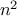
functions
for a system with
types), we need to write only one
function
for each pair of types rather than a different
function
for
each collection of types and each generic operation.
3 What we are counting on here is the fact that the
appropriate transformation between types depends only on the types
themselves, not on the operation to be applied.
On the other hand, there may be applications for which our coercion
scheme is not general enough. Even when neither of the objects to be
combined can be converted to the type of the other it may still be
possible to perform the operation by converting both objects to a
third type. In order to deal with such complexity and still preserve
modularity in our programs, it is usually necessary to build systems
that take advantage of still further structure in the relations among
types, as we discuss next.
Hierarchies of types
The coercion scheme presented above relied on the existence of natural
relations between pairs of types. Often there is more “global”
structure in how the different types relate to each other. For
instance, suppose we are building a generic arithmetic system to
handle integers, rational numbers, real numbers, and complex numbers.
In such a system, it is quite natural to regard an integer as a
special kind of rational number, which is in turn a special kind of
real number, which is in turn a special kind of complex number. What
we actually have is a so-called
hierarchy of types, in which,
for example, integers are a
subtype of rational numbers (i.e.,
any operation that can be applied to a rational number can
automatically be applied to an integer). Conversely, we say that
rational numbers form a
supertype of integers. The particular
hierarchy we have here is of a very simple kind, in which each type
has at most one supertype and at most one subtype. Such a structure,
called a
tower, is illustrated in figure
2.25.
|
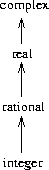
|
Figure 2.
25 A tower of types.
|
If we have a tower structure, then we can greatly simplify the problem
of adding a new type to the hierarchy, for we need only specify how
the new type is embedded in the next supertype above it and how it is
the supertype of the type below it. For example, if we want to add an
integer to a complex number, we need not explicitly define a special
coercion
function
integer_to_complex. Instead, we define how an
integer can be transformed into a rational number, how a rational
number is transformed into a real number, and how a real number is
transformed into a complex number. We then allow the system to
transform the integer into a complex number through these steps and
then add the two complex numbers.
We can redesign our
apply_generic
function
in the following
way: For each type, we need to supply a
raise
function, which
“raises” objects of that type one level in the tower. Then when the
system is required to operate on objects of different types it can
successively raise the lower types until all the objects are at
the same level in the tower. (Exercises
2.86
and
2.87
concern the details of implementing such a strategy.)
Another advantage of a tower is that we can easily implement the
notion that every type “inherits” all operations defined on a
supertype. For instance, if we do not supply a special
function
for
finding the real part of an integer, we should nevertheless expect
that real_part will be defined for integers by virtue of the
fact that integers are a subtype of complex numbers. In a tower, we
can arrange for this to happen in a uniform way by modifying apply_generic. If the required operation is not directly defined for
the type of the object given, we raise the object to its supertype and
try again. We thus crawl up the tower, transforming our argument as we
go, until we either find a level at which the desired operation can be
performed or hit the top (in which case we give up).
Yet another advantage of a tower over a more general hierarchy is that
it gives us a simple way to “lower” a data object to the simplest
representation. For example, if we add
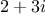 to
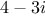, it would be
nice to obtain the answer as the integer 6 rather than as the complex
number
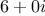. Exercise
2.88 discusses a way to implement
such a lowering operation. (The trick is that we need a general way
to distinguish those objects that can be lowered, such as
, from
those that cannot, such as
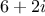.)
|
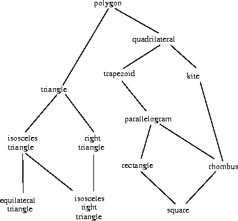
|
Figure 2.
26 Relations among types of geometric figures.
|
Inadequacies of hierarchies
If the data types in our system can be naturally arranged in a tower,
this greatly simplifies the problems of dealing with generic operations
on different types, as we have seen. Unfortunately, this is usually
not the case. Figure
2.26 illustrates a
more complex arrangement of mixed types, this one showing relations
among different types of geometric figures. We see that, in general,
a type may have more than one subtype. Triangles and quadrilaterals,
for instance, are both subtypes of polygons. In addition, a type may
have more than one supertype. For example, an isosceles right
triangle may be regarded either as an isosceles triangle or as a right
triangle. This multiple-supertypes issue is particularly thorny,
since it means that there is no unique way to “raise” a type in the
hierarchy. Finding the “correct” supertype in which to apply an
operation to an object may involve considerable searching through the
entire type network on the part of a
function
such as
apply_generic. Since there generally are multiple subtypes for a
type, there is a similar problem in coercing a value “down” the type
hierarchy. Dealing with large numbers of interrelated types while
still preserving modularity in the design of large systems is very
difficult, and is an area of much current research.
4
Exercise 2.84.
Louis Reasoner has noticed that
apply_generic may try to
coerce the arguments to each other’s type even if they already have
the same type. Therefore, he reasons, we need to put
functions
in the coercion table to “coerce” arguments of each type to their
own type. For example, in addition to the
javascript_number_to_complex
coercion shown above, he would do:
function javascript_number_to_javascript_number(n){ return n; }
function complex_number_to_complex_number(n){ return n; }
put_coercion("javascript_number","javascript_number",
javascript_number_to_javascript_number);
put_coercion("complex_number","complex_number",
complex_number_to_complex_number);
-
With Louis’s coercion
functions
installed, what happens if apply_generic
is called with two arguments of type "javascript_number" or two arguments of
type "complex" for an operation that is not found in the table for those
types? For example, assume that we’ve defined a generic exponentiation
operation:
function exp(x,y) { return apply_generic("exp",list(x,y)); }
and have put a
function
for exponentiation in the
JavaScript-number
package but not in any other package:
// following added to JavaScript-number package
put("exp",list("javascript_number","javascript_number"),
function(x,y) { return tag(Math.exp(x,y)); }) // using primitive Math.exp
What happens if we call exp with two complex numbers as arguments?
-
Is Louis correct that something had to be done about
coercion with arguments of the same type, or does apply_generic
work correctly as is?
-
Modify apply_generic so that it doesn’t try coercion if
the two arguments have the same type.
Exercise 2.85.
Show how to generalize
apply_generic to handle
coercion in the general case of multiple arguments. One strategy is
to attempt to coerce all the arguments to the type of the first argument, then
to the type of the second argument, and so on. Give an example of a situation
where this strategy (and likewise the two-argument version given
above) is not sufficiently general. (Hint: Consider the case where
there are some suitable mixed-type operations present in the table
that will not be tried.)
Exercise 2.86.
Suppose you are designing a generic arithmetic system for dealing with
the tower of types shown in figure
2.25:
integer, rational, real, complex. For
each type (except complex), design a
function
that raises objects of
that type one level in the tower. Show how to install a generic
raise operation that will work for each type (except complex).
Exercise 2.87.
Using the
raise operation of exercise
2.86, modify the
apply_generic
function
so that it coerces its arguments to have the
same type by the method of successive raising, as discussed in this
section. You will need to devise a way to test which of two types is
higher in the tower. Do this in a manner that is “compatible” with
the rest of the system and will not lead to problems in adding new
levels to the tower.
Exercise 2.88.
This section mentioned a method for “simplifying” a data object
by lowering it in the tower of types as far as possible. Design
a
function
drop that accomplishes this for the tower described
in exercise
2.86. The key is to decide, in some general way, whether
an object can be lowered. For example, the complex number
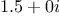
can be lowered as far as
"real", the complex number
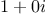 can be
lowered as far as
"integer", and the complex number
cannot
be lowered at all. Here is a plan for determining whether an object
can be lowered: Begin by defining a generic operation
project
that “pushes” an object down in the tower. For example, projecting
a complex number would involve throwing away the imaginary part. Then
a number can be dropped if, when we
project it and
raise
the result back to the type we started with, we end up with something
equal to what we started with. Show how to implement this idea in
detail, by writing a
drop
function
that drops an object as far
as possible. You will need to design the various projection
operations
5 and install
project as a generic operation in
the system. You will also need to make use of a generic equality
predicate, such as described in exercise
2.82. Finally, use
drop
to rewrite
apply_generic from exercise
2.87 so that it
“simplifies” its answers.
Exercise 2.89.
Suppose we want to handle complex numbers whose real
parts, imaginary parts, magnitudes, and angles can be either ordinary
numbers, rational numbers, or other numbers we might wish to add to
the system. Describe and implement the changes to the system needed
to accommodate this. You will have to define operations such as sine and cosine that are generic over ordinary numbers and
rational numbers.